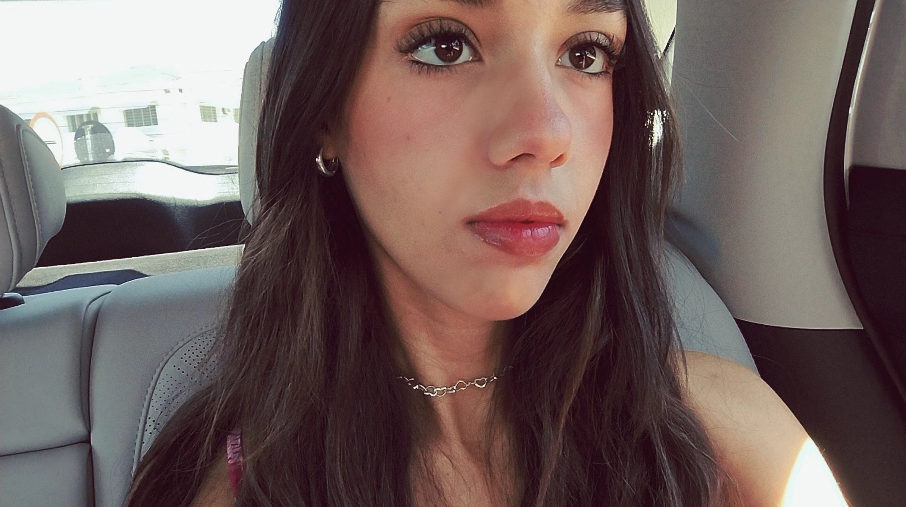
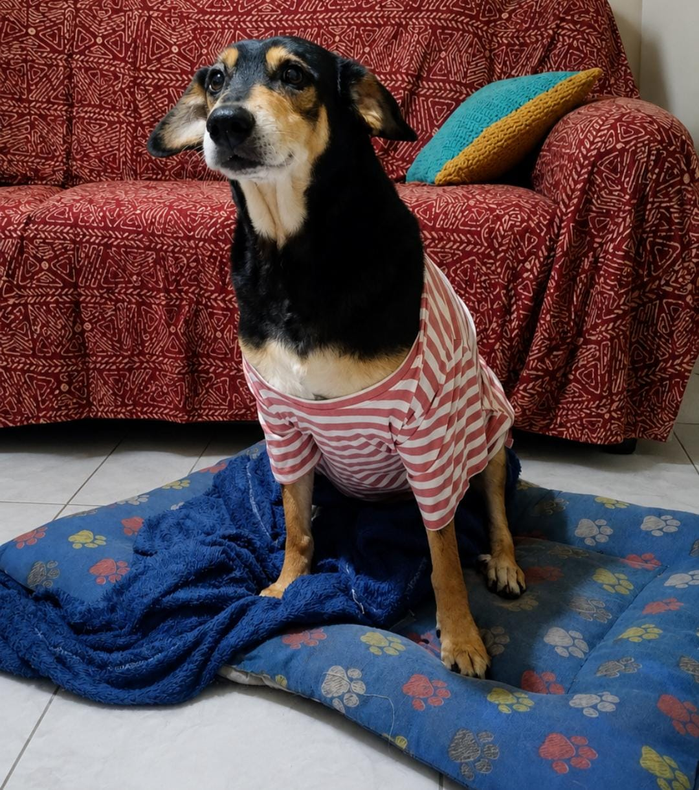

Beatriz Marques
Estudante de Desenvolvimento de Sistemas
Olá! Meu nome é Beatriz, tenho 17 anos, sou estudante do curso Técnico em Desenvolvimento de Sistemas e moro em Mococa - SP. Sou uma pessoa dedicada, responsável, organizada e muito curiosa, sempre buscando aprender coisas novas e evoluir tanto pessoalmente quanto profissionalmente. Gosto de desafios e acredito que cada experiência é uma oportunidade para aprender e crescer.
Sobre Mim
Sou uma pessoa educada e gosto de manter tudo organizado. Valorizo o respeito, a responsabilidade e o trabalho em equipe.Sempre procuro fazer o meu melhor em tudo o que me proponho a realizar, por mais desafiador que seja. Gosto de aprender coisas novas, enfrentar desafios e buscar soluções criativas para os problemas. Acredito que dedicação e esforço são fundamentais para conquistar qualquer objetivo.
Objetivos
Meu principal objetivo é conquistar minha independência, construir uma carreira sólida e realizar meus sonhos por meio dos estudos e do meu esforço. Pretendo ser aprovada no curso de Medicina Veterinária, uma área pela qual tenho muito interesse, para transformar minha paixão pelos animais em profissão. Também sonho em morar sozinha, conquistar minha estabilidade financeira e continuar evoluindo tanto pessoal quanto profissionalmente. Acredito que, com dedicação, responsabilidade e vontade de aprender, posso alcançar meus objetivos e construir um futuro do qual eu me orgulhe.
Interesses
Além da tecnologia, gosto muito de ouvir músicas, assistir filmes e séries, passar tempo com minha família e praticar academia. Também sou apaixonada por animais e tenho um cachorro chamado Bidu, que faz parte da minha rotina e sempre deixa meus dias mais felizes.

Entre em Contato
Gostou do meu portfólio? Entre em contato comigo!